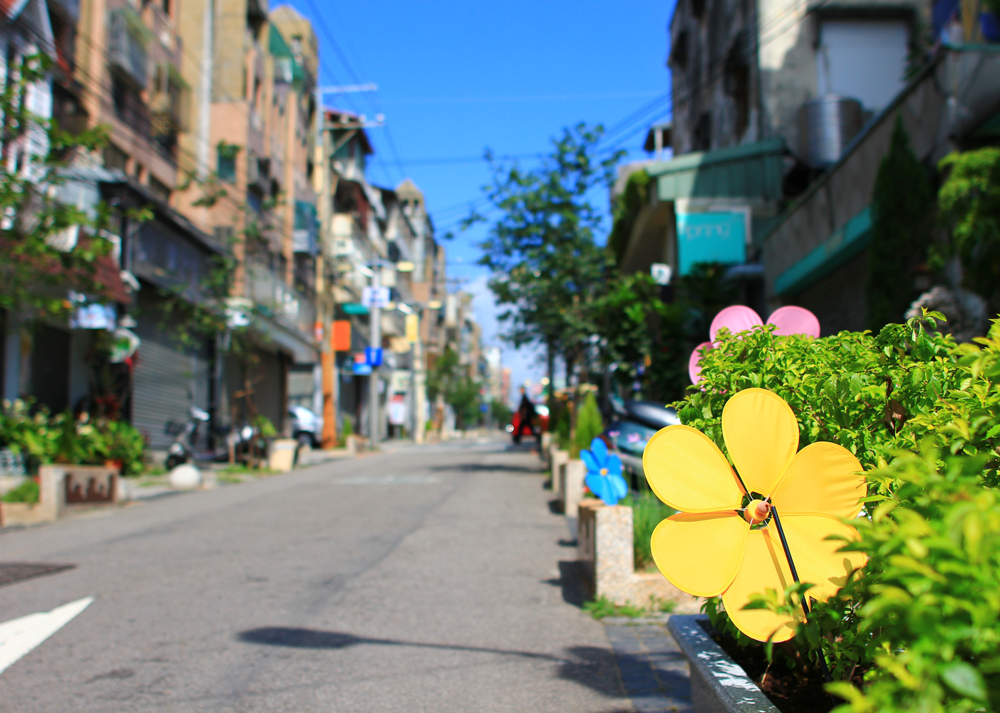

鄰近東海大學的「東海藝術街商圈」是國內少數具備有人文、藝術景觀和社區意識的商圈，這是個令人喜歡並想居住的城市角落。
東海藝術街區不大，是將多戶舊有公寓巧思變化後，在小斜坡上集結而成的美麗店街，但以國際街與藝術街為主軸，串連藝術南、北街中各巷弄內共逾百家特色店、餐廳，探尋巷弄間充滿個性、創意與人文氣息的店家，二手書店、咖啡館、茶藝空間、陶藝坊、各種風格的服飾店、中法義式客家風味的異國餐廳等，這裡具有生活機能又結合藝術情趣，邊走邊逛如尋寶般趣味。
雖說是商圈，這裡卻具有特殊的群體意識感，感覺反倒比較像一個和睦的大社區，有著如傳統社會的守望相助人情味，於此同時，居民也對藝術街有著相當的熱忱與希望，早在民國78年就以藝術造鎮的嶄新想法誕生了東海藝術街區，期間也歷經不少風霜，但商圈並不墨守成規，而是碰撞出更多的可能性。
的確，歷久不衰的老店當然自有其魅力，讓人流連忘返，卻也能不時發現新店家帶著新創意陸續加入。102年更發起了一連串的彩繪空間活動，動員街區民眾與鄰近學校師生，大家一起拿起畫筆、刷子作畫，很多店家也首次參加了街區活動，看著自己的小小作品讓多面隱身街區巷弄的陳舊外牆煥然一新，彷彿置身異國街道，自己也對這美麗街區更加喜愛了。一巷弄一美學的精彩饗宴持續在藝術街區發光發熱，推薦大家彎進巷弄尋找藝術街的新奇浪漫。
東海藝術街區不大，是將多戶舊有公寓巧思變化後，在小斜坡上集結而成的美麗店街，但以國際街與藝術街為主軸，串連藝術南、北街中各巷弄內共逾百家特色店、餐廳，探尋巷弄間充滿個性、創意與人文氣息的店家，二手書店、咖啡館、茶藝空間、陶藝坊、各種風格的服飾店、中法義式客家風味的異國餐廳等，這裡具有生活機能又結合藝術情趣，邊走邊逛如尋寶般趣味。
雖說是商圈，這裡卻具有特殊的群體意識感，感覺反倒比較像一個和睦的大社區，有著如傳統社會的守望相助人情味，於此同時，居民也對藝術街有著相當的熱忱與希望，早在民國78年就以藝術造鎮的嶄新想法誕生了東海藝術街區，期間也歷經不少風霜，但商圈並不墨守成規，而是碰撞出更多的可能性。
的確，歷久不衰的老店當然自有其魅力，讓人流連忘返，卻也能不時發現新店家帶著新創意陸續加入。102年更發起了一連串的彩繪空間活動，動員街區民眾與鄰近學校師生，大家一起拿起畫筆、刷子作畫，很多店家也首次參加了街區活動，看著自己的小小作品讓多面隱身街區巷弄的陳舊外牆煥然一新，彷彿置身異國街道，自己也對這美麗街區更加喜愛了。一巷弄一美學的精彩饗宴持續在藝術街區發光發熱，推薦大家彎進巷弄尋找藝術街的新奇浪漫。